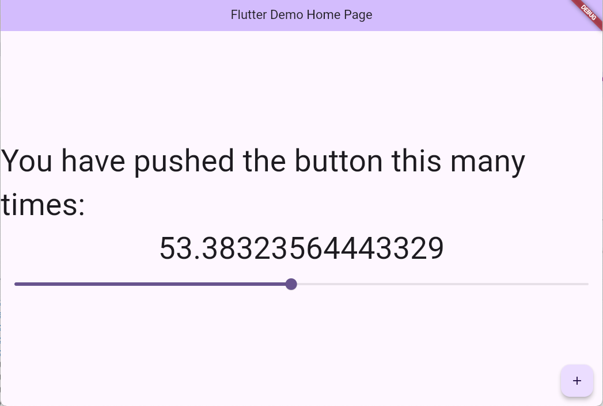

Lab 1
This week, you have had a quick introduction to Flutter, and started programming in Dart. You have learned how to declare variables,
declare a function, and add Text and Slider Widgets to the screen.
For the labs in this course, you should have a second project called "my_CST2335_labs". You can use the in-class code as an example
of how the code works, but you should do all of your work in your own project. For week 1, demonstrate your understanding of the following items (4 marks) :
- Change how the _counter variable is declared so that it uses var instead of double. Basically
initialize the variable to 0.0 instead of 0.
- Show that you can launch the program on the Android emulator, and a web browser (Edge or Chrome). For Android, you'll have to first install the Command-Line tools in the SDK
- Declare another variable called myFontSize and have it initialized to 30.0. Change both the Text() widgets so that they
use a TextStyle() object that are both set to that size. That way, whenever you change the 30 to something else, both
lines of Text should change size to the new size with Hot Swapping. You will have to remove the const keyword in
front of the Text()
- Add a Slider widget where the onChanged is set to the setNewValue() function and that it also sets your new myFontSize variable equal to the new value passed in. This means
that whenever you change the slider, your font size of the two lines of Text should change to the new size.

In order to get marks for the lab, you should show these items are completed and working to the lab professor during your normal lab period. You don't need to submit anything for now
but you will keep working on your code in next week's lab.